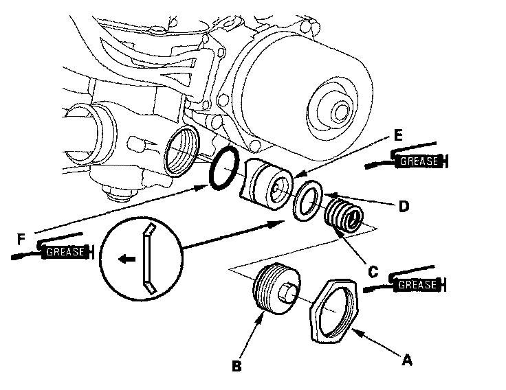
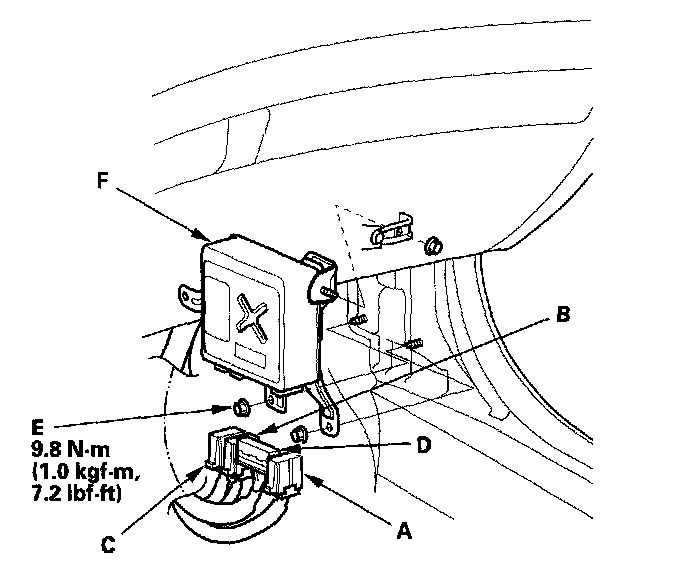

Rack Guide Removal/Installation
Rack Guide Removal/installationNote these items during removal/installation: Do not allow dust, dirt, or other foreign materials to enter the steering gearbox.
1. Remove the steering gearbox.
2. Loosen the locknut (A), then remove the rack guide screw (B), spring (C), disc washer (D), and rack guide (E).

3. Remove the O-ring (F) from the rack guide. Wipe the grease off the sliding surface of the rack guide.
4. Apply multipurpose grease to the new O-ring, then install it to the rack guide.
5. Apply multipurpose grease to the sliding surface and the circumference of the rack guide, and install it onto the gearbox housing. Wipe the grease off the threaded section of the housing.

6. Apply multipurpose grease to both ends of the spring, and install it onto the gearbox housing.
7. Install the disc washer with its convex side facing the rack guide.
8. Remove the old sealant from the rack guide screw and apply new sealant (Three Bond 1215 or Loctite 5699) to the middle of the threads. Loosely install the rack guide screw on the steering gearbox.
9. Loosely install the locknut.
10. Adjust the rack guide screw. After adjusting, check that the rack moves smoothly by sliding the rack right and left.